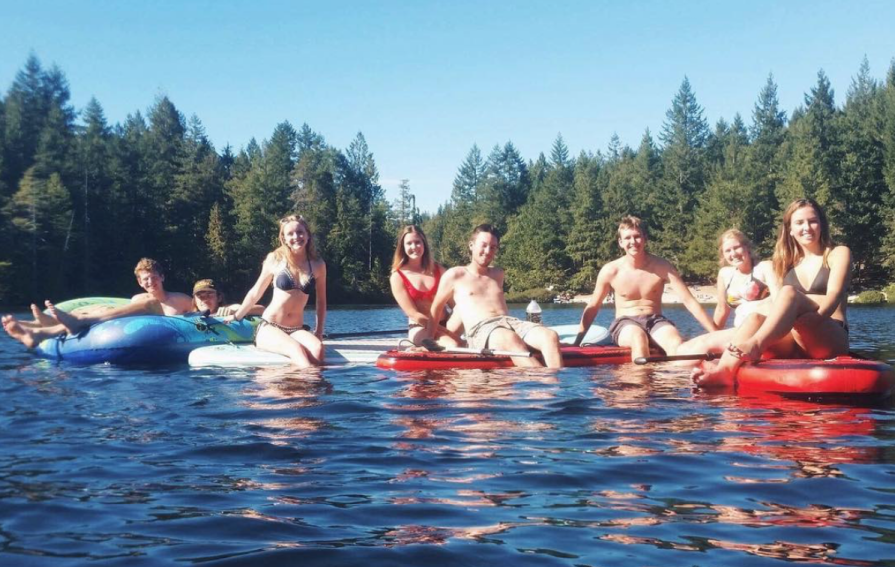
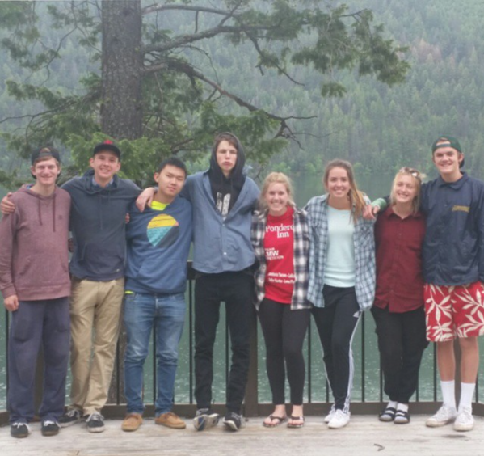
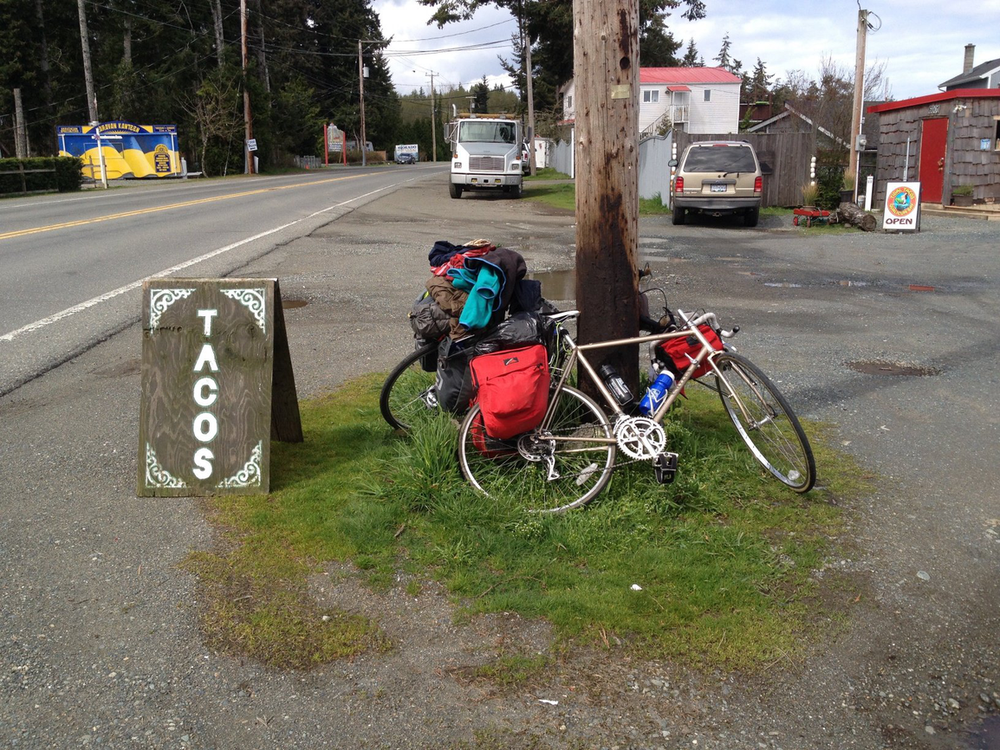

Who am I?
I am a 3rd year software engineering student at the University of Victoria, and if you're reading, probably
looking for a co-op. I enjoy making things in many mediums, but, ultimately, chose software engineering because
I could take the things learned at school and apply them in the same day in my work. Besides
building things, I enjoy backpacking, biking, skateboarding, volleyball, skiing/snowboarding, and friends.
What is this website for?
It was suggested to me by my co-op advisor to keep track of the projects I do on co-op as part of a
profile. I thought there would be no better way to show my projects than with another project. So that is
this.


